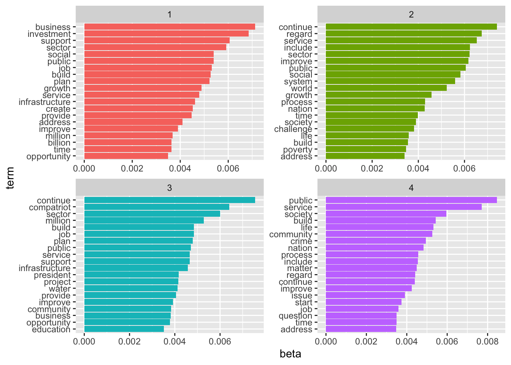

A Descriptive Analysis of Presidential SONA Addresses in South Africa - 1994 to 2023
Abstract
Summary of motivation and outcome. Start with context, task and object, finish with findings and conclusion. This is written last.
Introduction
This is the introduction. To cover: what is SONA and what is its purpose? What is topic modelling, sentiment analysis and descriptive analysis etc? What was the assignment task? What was the motivation? Why is modelling important?
Materials and Methods
DataSet
Summary of data-set and data cleaning methods used. How the data was read in, parsed.
Sentiment Analysis
Summary of tools used for sentiment analysis (R packages), how data was pre-processed for sentiment analysis, and techniques used.
Topic Modelling
Summary of topic modelling, LDA. Tools used for LDA (R packages), how data was pre-processed for LDA, and techniques used.
Results
Results introduction
Sentiment Analysis
Topic Modelling
| document | topic | gamma |
|---|---|---|
| Ramaphosa | 1 | 0.9999966 |
| Mbeki | 2 | 0.9999974 |
| Zuma | 3 | 0.9983990 |
| Mandela | 4 | 0.9999953 |
Discussion & Conclusion
Sentiment Analysis
Topic Modelling
References
The class makes various changes to the way that references are handled. The class loads natbib, and also the appropriate bibliography style. References can be made using the normal method; the citation should be placed before any punctuation, as the class will move it if using a superscript citation style (Garnier, Gautrais, and Theraulaz 2007). The use of natbib allows the use of the various citation commands of that package have shown something. Long lists of authors will be automatically truncated in most article formats, but not in supplementary information or reviews. If you encounter problems with the citation macros, please check that your copy of natbib is up to date. The demonstration database file bibliography.bib shows how to complete entries correctly.
Multiple citations to be combined into a list can be given as a single citation. This uses the mciteplus package. Citations other than the first of the list should be indicated with a star.
The class also handles notes to be added to the bibliography. These should be given in place in the document. As with citations, the text should be placed before punctuation. A note is also generated if a citation has an optional note. This assumes that the whole work has already been cited: odd numbering will result if this is not the case .
References
Garnier, Simon, Jacques Gautrais, and Guy Theraulaz. 2007. “The biological principles of swarm intelligence.” Swarm Intelligence 1 (1): 3–31. https://doi.org/10.1007/s11721-007-0004-y.